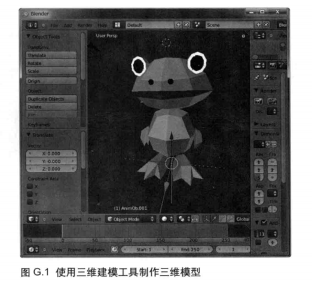
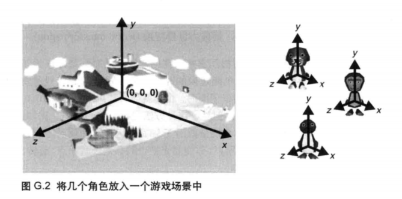
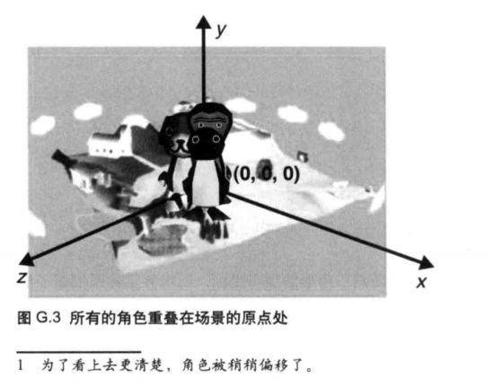
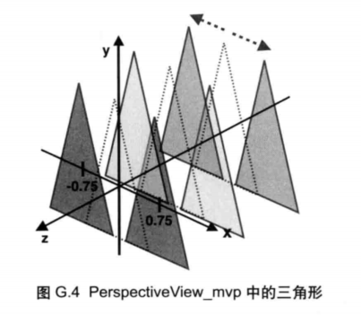
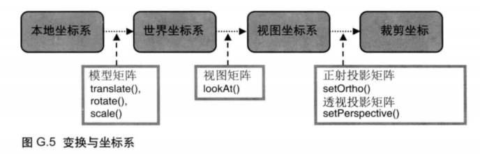

对应《WebGL编程指南》附录G
一、引入
在第7章“进人三维世界”中，我们创建并显示了第一个三维物体（一个立方体），示例程序开始变得像一个“真正”的三维程序了。我们亲手设置了立方体的顶点坐标和索引信息，这很耗时间。虽然整本书我们都是这样做的，但是在构建你自己的，真正的WebGL程序时往往不会这样做。我们通常使用专用的三维建模工具，因为建模工具允许我们通过对各种基本的三维图形（立方体、圆柱体、球体等）进行各种操作（组合、形变、顶点数量调整、顶点间隔优化等）来创建精美复杂的三维模型。三维建模工具Blender(www.blender.org/)的界面如图G.1所示。

二、本地坐标系
当我们创建三维模型时， 需要知道原点（0.0,0.0,0.0)在何处。 你可以自由选择原点的位置， 所以三维模型的建立就比较容易， 或者说很容易确定三维模型在场景中的位置。之前我们创建的立方体， 原点就在立方体的中心。 球状物体如太阳和月亮等， 通常也将原点设置在球心。
另一方面， 大部分如图 G.1 所示的游戏角色模型， 其原点大部分都是位于脚部， Y轴垂直向上穿过身体的中线。 这样， 如果我们将角色放置在 y 坐标为 0 的位置 （ 也就是地面） ， 角色看上去就像站立在地面上一样—既没有悬浮在空中， 也没有沉入地面以下。这时， 如果我们沿 Z 轴或 X 轴移动角色， 看上去就好像角色在地面上跑动或滑动。 或者，你也可以对令角色沿 Y 轴的旋转， 看上去就好像在转向一样。
此时， 组成场景中的模型或角色的顶点， 其坐标是相对于角色本身的原点的， 这样的坐标系被称为本地坐标系 (local coordinate system)。 使用建模工具如 Blender 创建的模型 （ 包括顶点坐标、 颜色、 索引等） 可以被导出为文件， 而我们可以将文件中的顶点数据导入到缓冲区中， 并使用 gl.drawElementsO 方法将这个建模工具创建的模型绘制出来。
三、世界坐标系
下面来考虑在某个三维游戏中， 同一个空间内出现多个角色的情况。 比如， 我们需要将下图(右） 中的 3 个角色放置在下图 (左）中的游戏场景中。 每个角色都有自己的原点， 场景也有原点。

当我们想要在场景中显示角色时， 就会遇到一个问题。 因为所有角色模型都是基于自身的原点 （ 位于脚部） 制作的， 它们会重叠出现在场景的同一个位置上， 那就是场景自身的原点， 如图 G.3 所示、 这可不是通常会发生的情况， 你也一定不希望这样。

为了解决这个问题， 你需要调整每个角色的位置使之不再互相重叠。 为此， 我们需要使用第 3 章 “绘制和变换三角形” 和第 4 章 “高级变换与动画基础” 中的知识。 为了避免角色互相重叠， 可以把企鹅移动到（100,0,0)， 把猴子移动到（200,10,20)， 把狗狗移动到（10,0,200)。
根据上述， 我们用来移动和放置角色的坐标系就称为世界坐标系 (world coordinate system), 或称全局坐标系（global coordinate system)。 角色本身仍然是基于本地坐标系的，而上述这种从本地坐标系到世界坐标系的转换， 就称为世界变换 (world transformation)。
当然， 为了避免企鹅、 猴子和狗狗角色的相互重叠， 在创建它们的时候就应该为其指定世界坐标。 比如， 在 Blender 等工具里为企鹅建模的时候， 可以将企鹅的模型建立在（ 100,0,0)， 这样当你将企鹅的模型加入到场景里面时， 企鹅就会自动出现在（100,0,0)的位置， 而不用你去进行坐标变换以避免重叠。 但是， 这种方法也有自身的缺陷。 比如，你可能会想让企鹅像在跳芭蕾舞一样自旋， 你会使企鹅沿 Y 轴旋转， 但这样就对导致企鹅沿着场景的原点作半径为 100 的圆周运动。 所以， 你需要先把企鹅移到场景原点， 旋转，再移回来， 真够麻烦的。
事实上， 这时的情形与第 7 章中的 PerspectiveViev^rwp 示例程序很像。 我们使用一组三角形的顶点（ 其坐标是相对于场景的原点定义的） 绘制了两组三角形， 如图所示。

这里， 本地坐标系描述了图中虚线所画三角形的顶点坐标， 而世界坐标系描述了沿着 X 轴平移后的两组三角形。
四、变换与坐标系
目前， 我们还是没有讨论过本地坐标系和世界坐标系之间的变换， 这样你就可以专注于上面每个例子中的内容。 作为参考， 图 G.5 给出了 WebGL 中的多种坐标系及其之间的变换关系， 希望这张图能够加深你对三维图形学的认识， 并帮助你在建模工具中进行实验。

Tips: Please indicate the source and original author when reprinting or quoting this article.